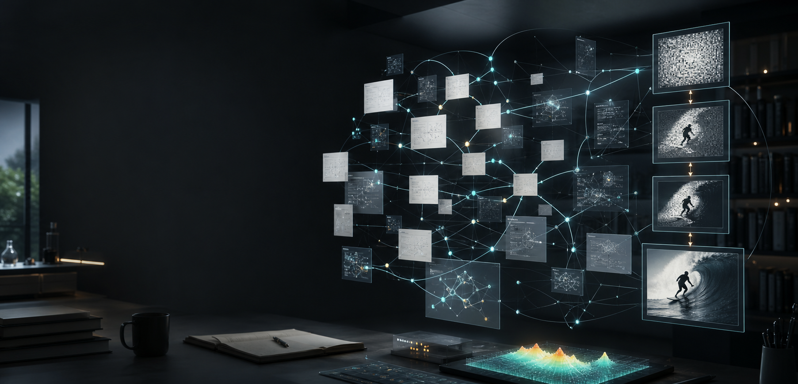

领域进入，而非搜索
把碎片信息整理为结构、动因与明确的下一步。

AI-native field entry system
给我一句话，带你走进新的领域
不再从搜索结果堆里拼凑答案。AI 为你的背景生成概念地图、热点缘由与可玩的理解路径。
The missing entry point
当 MCP、World Model 或 3D Gaussian Splatting 突然出现在眼前，真正困难的不是找到定义，而是判断： 它为何重要，和我有什么关系，是否值得深入。
One curiosity, one route
一句话、截图、链接或 paper figure，都可以成为起点。
低摩擦输入真实好奇心，而非检索关键词。
以你的研究方向、知识层级与关注点重组解释。
概念地图、热点原因与阅读路径一次成型。
在 Playground 中改变参数，直观看见机制。
连接论文、创作者内容与邻近趋势。
Playground showcase
当前入口
为什么值得关注
模型开始把时间一致性纳入生成过程，使创作、仿真和训练数据生成出现新的可行路径。
你的背景
聚焦 latent video diffusion、temporal attention 与评估瓶颈。
概念地图
live理解深度
模型在噪声空间逐步恢复视频，并借助跨帧注意力约束相邻画面的主体与运动关系。
交互实验
关联视图
延伸探索
curatedWhy Playground to PhD
把碎片信息整理为结构、动因与明确的下一步。
同一主题，对研究者、工程师与决策者给出不同入口。
在参数变化与可视反馈中理解技术机制。
连接 paper、视频、技术博客与可信创作者。